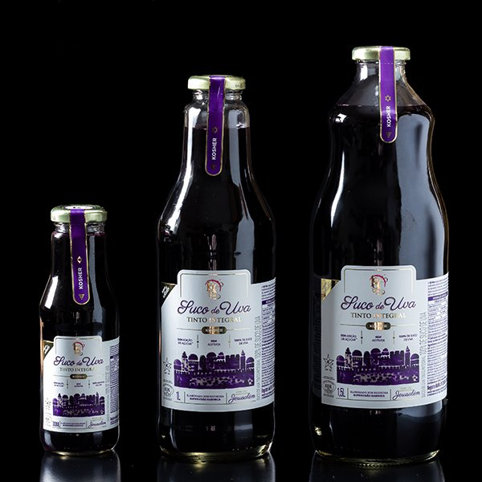

Produzido no NordesteSuco de Uva Integral Vermelho
Tamanhos: 1L • 1,5L • 300ml
100% natural, sem adição de água, açúcar ou conservantes. Cada litro é elaborado com 2kg de uvas de alta qualidade do Nordeste do Brasil, resultando em um produto rico e com sabor único.
Perfeito para o dia a dia, para quem busca saúde e sabor autêntico. Ideal para toda a família.
Entre em Contato